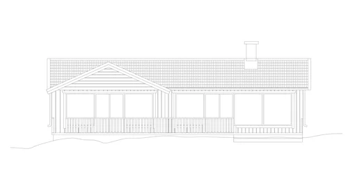
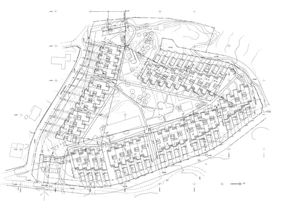
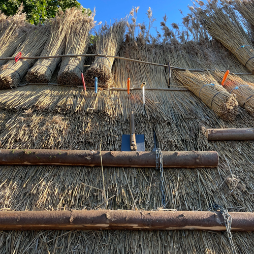
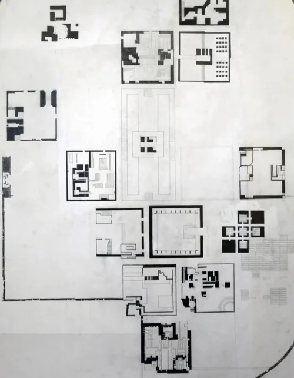
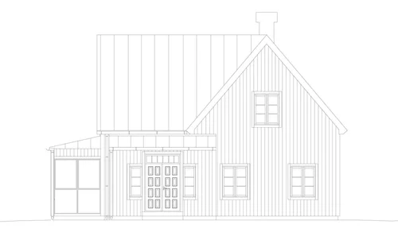
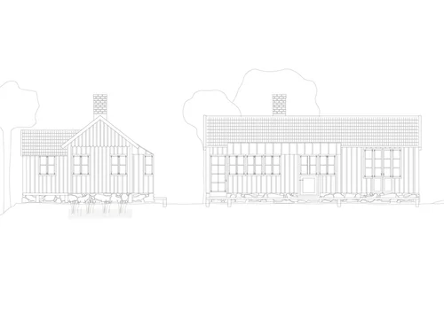
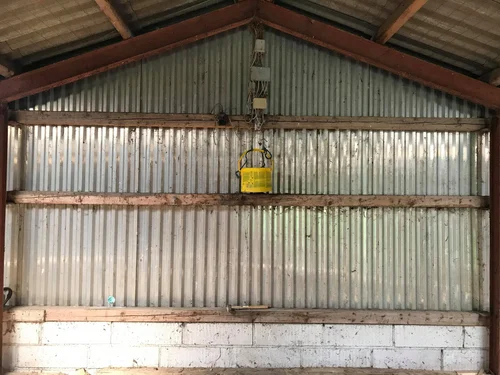
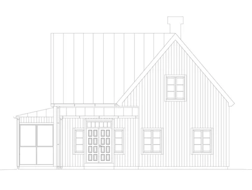
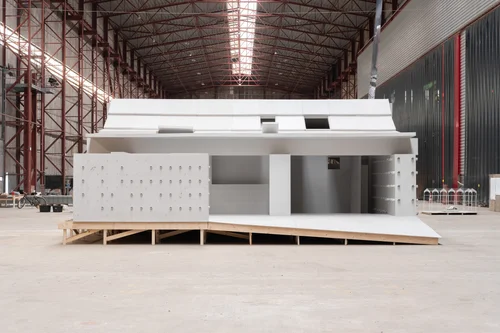
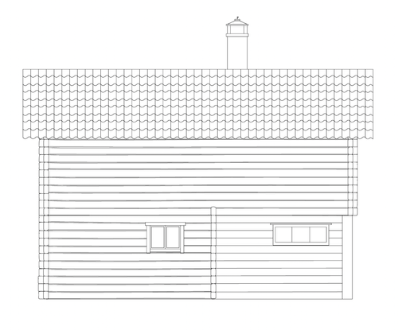

works
all / New building / Renovation & extension / Studies
-
Ongoing
Fiversättraön, conversion [details]
Stockholm archipelago

-
Ongoing
Djursholm, extension [details]
Djursholm

-
2024–25
Capellagården, building conservation [details]
Öland

-
2017–22
KADK, BA in architecture [details]
Copenhagen

-
Ongoing
Mora, renovation & extension [details]
Mora

-
Ongoing
Ösmo, new building [details]
Ösmo

-
2021
Dinesen & KADK, transformation [details]
Vrå, Sønderjylland

-
Lahäll, renovation
Lahäll · page in progress

-
2017–22
KADK, MA in architecture [details]
Copenhagen

-
Siljansnäs, extension
Siljansnäs · page in progress
